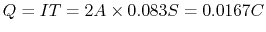

Solution: As the diode is forward biased, the voltage across it
is 0.7V, and the current through  is
,
the current through
is
,
the current through  is
is
 , and
.
, and
.
Also, using Thevenin's theorem, we have
,
, and then the linear equation

Solution: As the diode is forward biased, the voltage across it
is 0.7V. Assume the voltage in question is , then we have the following
equation:

Solution: This is a full-wave rectifier circuit, which turns the negative half cycle of the input to positive, so that the period of the output is . The charge of the capacitor reduced during this period is . If the voltage across the capacitor is dropped by less than , its capacitance has to be greater than .
The peak voltage of input is , the peak voltage of the output is . If the 1.4 V voltage drop across the two diodes is considered small enough when compared with the required 12 V, then the turn ratio of the transformer is . Otherwise, the the turn ratio is .
Solution: When  is in the range from -5.7V to 5.7V, neither
of the two diode branches is conducting and no current is drawn from the
voltage source. As the result, the output is identical to the input.
When , the diode branch on the right is conducting and it
will hold the output at 5.7V. When , the diode branch on the
left is conducting and it will hold the output at -5.7V.
is in the range from -5.7V to 5.7V, neither
of the two diode branches is conducting and no current is drawn from the
voltage source. As the result, the output is identical to the input.
When , the diode branch on the right is conducting and it
will hold the output at 5.7V. When , the diode branch on the
left is conducting and it will hold the output at -5.7V.
Solution: If at least one of the inputs is 0V, the corresponding diode is conducting and the output voltage is held to 0.7V. Only when both inputs are 5V, both diodes are cut off and draw no current from the voltage source. Since there is no voltage drop across the resistor, the output voltage is the same as the voltage source of 5V.
This circuit can be used to implement logic AND, i.e. only when both
input  AND input
AND input  are high (for true or logical 1), will the
output be high (true or logical 1). Otherwise the output is low (false
or logical 0).
are high (for true or logical 1), will the
output be high (true or logical 1). Otherwise the output is low (false
or logical 0).
| 0V | 0V | 5V | 5V | |
| 0V | 5V | 0V | 5V | |
| 0.7V | 0.7V | 0.7V | 5V |